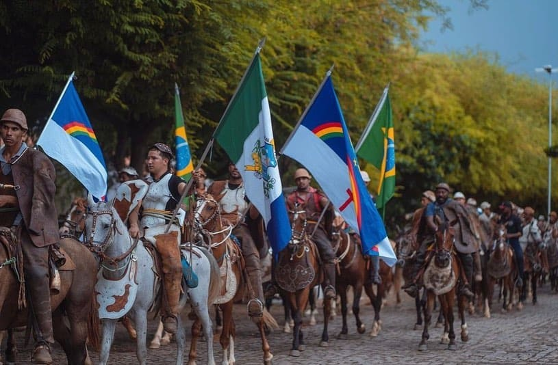
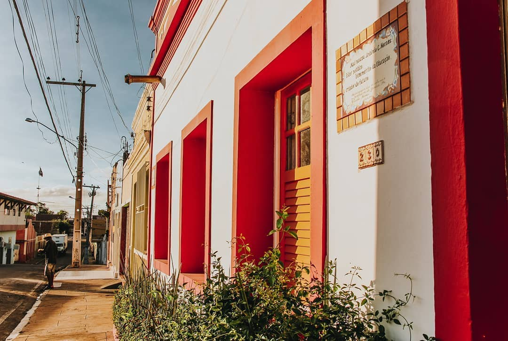
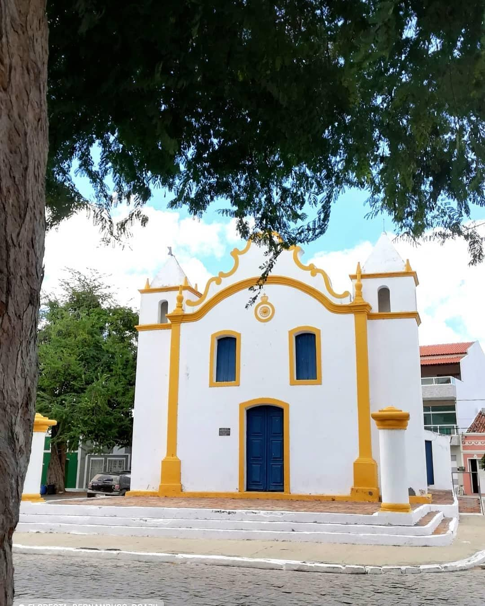
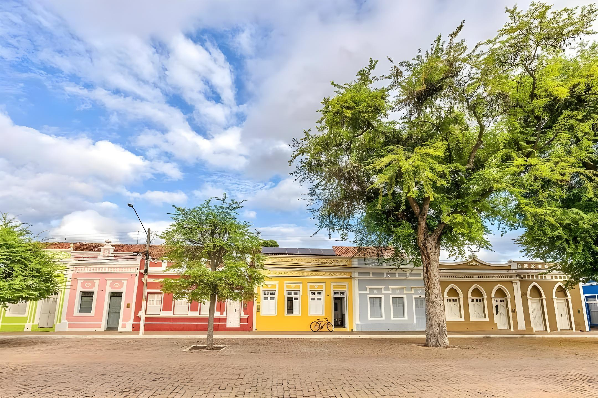
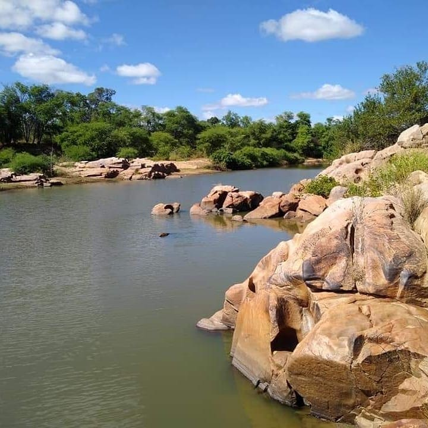
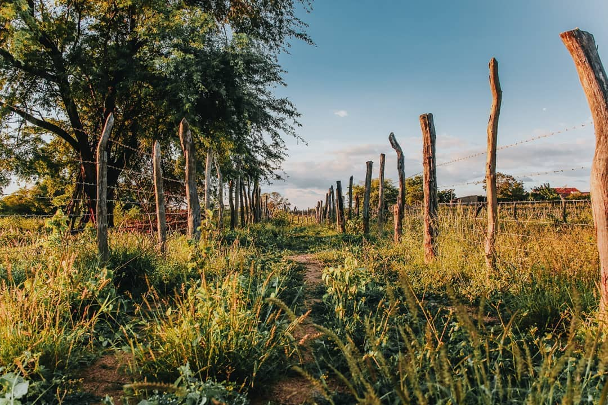
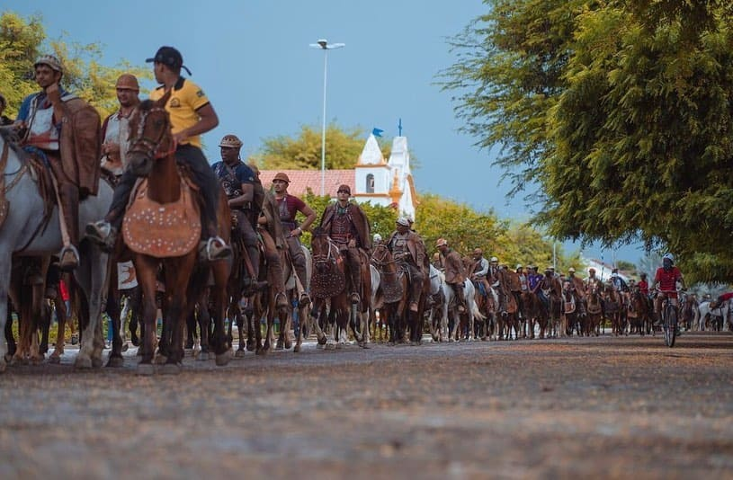
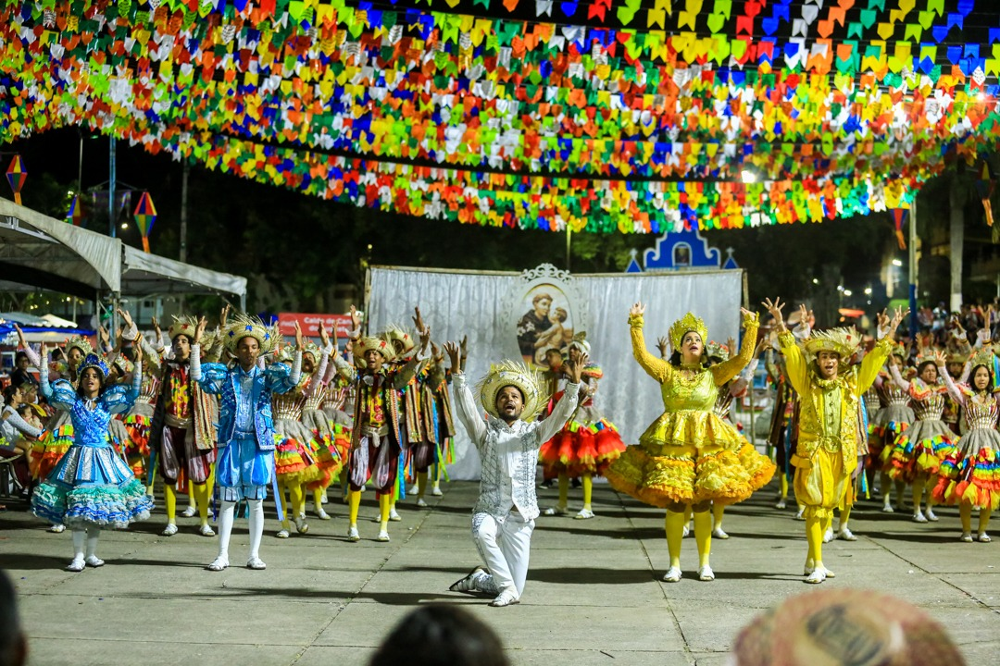

A Beleza da Cultura Sertaneja
Conheca as tradicoes, costumes e manifestacoes culturais que moldam a identidade unica do sertao pernambucano
Cultura, Tradio e Legado
O sertao pernambucano um verdadeiro tesouro cultural, onde tradicoes centenrias se mantm vivas atravs das geraes. Em Floresta-PE, essa rica herana cultural se manifesta nas festas populares, na gastronomia tipica, no artesanato, na musica e na danca, compondo um mosaico nico de expressoes artsticas e culturais que revelam a alma e a identidade do povo sertanejo.

Cavalgada Tradicional
A cavalgada é uma das mais emblemáticas manifestações culturais do sertão nordestino. Em Floresta, essa tradição ganha destaque durante as festas de vaquejada e em celebrações religiosas, quando dezenas de cavaleiros percorrem as ruas da cidade exibindo estandartes e bandeiras, em uma verdadeira demonstração de fé e tradição.
Os cavaleiros trajam vestimentas típicas, com chapéus de couro, e os cavalos são adornados com fitas coloridas e apetrechos tradicionais. Esta prática mantém viva a conexão entre o homem sertanejo e seu fiel companheiro nas lidas do campo, o cavalo, elemento fundamental na história e no desenvolvimento da região.

Forró Pé-de-Serra
O forró é mais que um ritmo musical para o sertanejo — é a expressão máxima da alegria e da sociabilidade. O autêntico forró pé-de-serra, com sua formação tradicional de trio (zabumba, triângulo e sanfona), embala as festas de Floresta durante todo o ano, ganhando especial destaque nas festas juninas.
Os dançarinos transformam qualquer espaço em um verdadeiro terreiro de festa, preservando uma tradição que remonta às origens do povo nordestino e que representa um patrimônio imaterial do Brasil.

Artesanato em Couro
A lida com o gado legou ao sertão uma rica tradição no trabalho com o couro. Os artesãos de Floresta produzem desde as clássicas indumentárias de vaqueiro (gibão, perneira, chapéu) até peças decorativas e utilitárias de alta durabilidade e beleza.
O ofício, muitas vezes passado de pai para filho, é um símbolo da resistência e da adaptação sertaneja aos rigores do clima.

Casario Histórico
Passear pelo centro de Floresta é fazer uma viagem no tempo. A arquitetura dos antigos casarões revela a prosperidade de outras épocas, com fachadas ornamentadas, portas altas e janelões coloridos que guardam a memória das famílias tradicionais da região.
A preservação desse conjunto arquitetônico é vital para manter viva a história visual e urbana da "Terra dos Tamarindos".

Festa do Padroeiro
A religiosidade é um pilar central da cultura nordestina. Em Floresta, as festas dos padroeiros mobilizam a comunidade inteira. Além das procissões e missas, o entorno das igrejas se transforma em um vibrante ponto de encontro com barracas de comidas típicas, leilões e apresentações musicais.
As celebrações reforçam o sentido de comunidade, atraindo florestanos que moram fora e turistas em busca da autêntica fé sertaneja, em um momento onde o sagrado e o profano caminham de mãos dadas pelas ruas da cidade.
Galeria



Eventos

Festa de So Joo
A maior celebrao do ano, com apresentaes musicais, quadrilhas, comidas tipicas e muita animao durante uma semana inteira.
Ver programacaoFestival de Vaquejada
Tradio sertaneja com provas de laco, apresentaes regiaonais e encontro de vaqueiros de toda a regiao do sertao.
Ver programacaoFeira Cultural do Sertao
Artesanato, musica, culinria e manifestacoes populares reunidos em um circuito cultural para moradores e visitantes.
Ver programacao